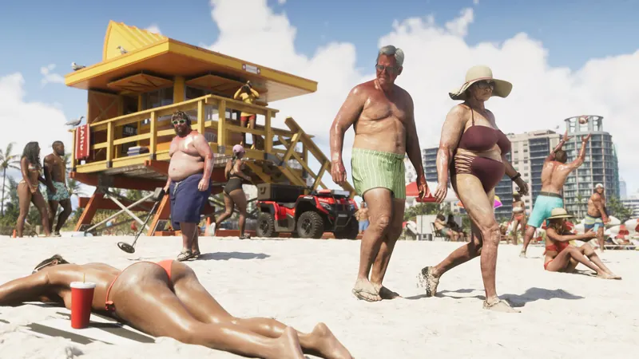
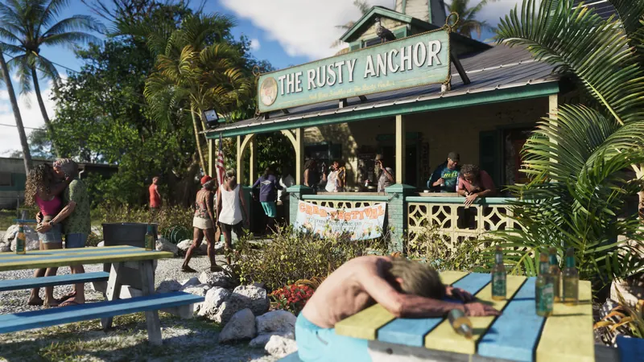
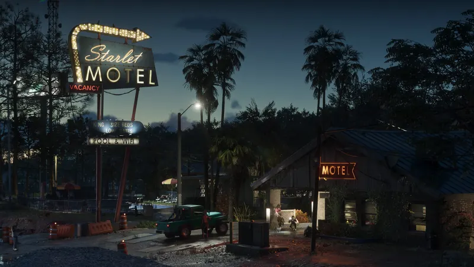

¿Cómo es el mapa de GTA 6? Las zonas de Leonida
Respuesta corta
GTA 6 transcurre en Leonida, un estado ficticio inspirado en Florida. Rockstar presenta seis zonas: Vice City, Leonida Keys, Grassrivers, Port Gellhorn, Ambrosia y Mount Kalaga.

Las seis zonas oficiales
Descripciones de Rockstar, tal y como las recogió Game Informer en mayo de 2025, resumidas:
- Vice City: la gran ciudad, donde se concentran el lujo, el ajetreo y la codicia.
- Leonida Keys: islas con aguas peligrosas.
- Grassrivers: humedales con depredadores más mortales que los caimanes.
- Port Gellhorn: aparcamientos donde corren la cerveza barata, los analgésicos y las bebidas energéticas de área de servicio.
- Ambrosia: el corazón de Leonida, con valores de toda la vida.
- Mount Kalaga: parque nacional para cazar, pescar y conducir campo a través.






Lo que muestra el mapa oficial
El póster del mapa que Rockstar publicó en la web oficial de GTA VI divide Leonida en cinco condados: Lummox, Kelly, Leonard, Vice-Dale y Mariana. Según ese mapa:
- Vice City está en la costa este, en el condado de Vice-Dale, con Vice Beach al otro lado de la bahía.
- Port Gellhorn queda en la costa oeste.
- Ambrosia está en el centro del estado.
- Mount Kalaga National Park ocupa el norte, en el condado de Lummox.
- Grassrivers está al sur, entre los condados de Kelly y Mariana.
- Leonida Keys: la cadena de islas del sur, con Key Lento.
¿Vice City es Miami?
Rockstar nunca nombra Florida. La prensa, como PC Gamer, compara Vice City con Miami, Leonida Keys con los Cayos de Florida y Grassrivers con los Everglades, pero son comparaciones de los medios. Para Port Gellhorn, Ambrosia y Mount Kalaga no hemos encontrado equivalencias con fuente fiable.
Si quieres saber quién vive aquí, mira los protagonistas. La Vice City de GTA 6 es actual: Rockstar la describe en la época presente, no en los años 80 del Vice City de 2002.
Fuentes
- Rockstar Games: Only in Leonida (web oficial)
- Rockstar Games: póster oficial del mapa de Leonida (Media & Artwork)
- Game Informer: las seis zonas de Leonida
- PC Gamer: mapa de GTA 6
- GamesRadar: GTA 6 se retrasa a noviembre de 2026
Resumen redactado por 6 Estrellas a partir de las fuentes citadas, revisadas el 19 de noviembre de 2026. Si ves un error, cuéntanoslo desde Quiénes somos.